18. Causal Inference: Mixed Backends (Bulk-only) - Cauchy Kernel
Source:vignettes/legacy/v18-causal-different-backends-CRP.Rmd
v18-causal-different-backends-CRP.RmdLegacy vignette (for the website / historical notes). These files may not match the current exported API one-to-one. Last verified: 2026-01-18.
For the up-to-date workflow, see the main package vignettes (Introduction, Model Spec, MCMC Workflow, Unconditional/Conditional/Causal, Backends, S3 Reference).
Theory (brief)
Mixed-backend causal models allow each treatment arm to use a different DP mixture representation. This can improve fit when treated and control groups exhibit distinct distributional complexity.
Causal Inference: Mixed Backends (Bulk-only) - Cauchy Kernel
This vignette fits two mixed-backend causal models with a shared Cauchy kernel:
- Model A: Treated = SB, Control = CRP
- Model B: Treated = CRP, Control = SB
Data Setup
data("causal_alt_real500_p4_k2")
y <- causal_alt_real500_p4_k2$y
T <- causal_alt_real500_p4_k2$T
X <- as.matrix(causal_alt_real500_p4_k2$X)
summary_tbl <- tibble(
statistic = c("N", "Mean", "SD", "Min", "Max"),
value = c(length(y), mean(y), sd(y), min(y), max(y))
)
summary_tbl %>%
mutate(value = signif(value, 4)) %>%
kable(caption = "Outcome Summary (Cauchy)", align = "c") %>%
kable_styling(bootstrap_options = c("striped", "hover"), full_width = FALSE, position = "center")| statistic | value |
|---|---|
| N | 500.000 |
| Mean | 0.274 |
| SD | 1.764 |
| Min | -8.089 |
| Max | 5.275 |
x_eval <- X[1:40, , drop = FALSE]
y_eval <- y[1:40]
df_causal <- data.frame(y = y, T = as.factor(T), x1 = X[, 1])
p_scatter <- ggplot(df_causal, aes(x = x1, y = y, color = T)) +
geom_point(alpha = 0.5) +
labs(title = "Outcome vs X1", x = "X1", y = "y", color = "Treatment") +
theme_minimal()
p_scatter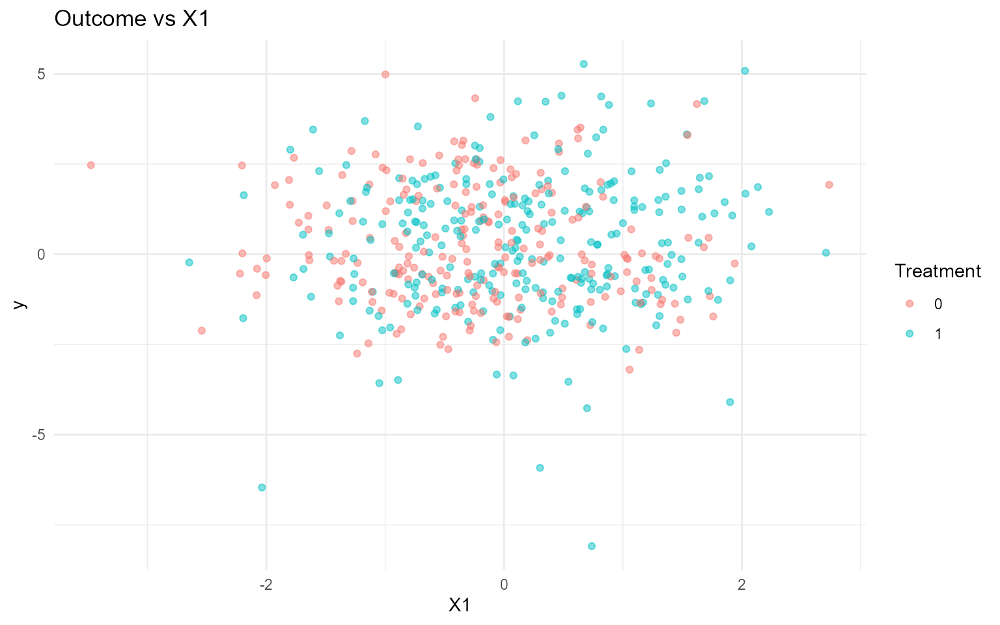
Model A: Treated SB, Control CRP (Cauchy)
bundle_sb_crp <- build_causal_bundle(
y = y,
T = T,
X = X,
kernel = c("cauchy", "cauchy"),
backend = c("sb", "crp"),
PS = "logit",
GPD = c(FALSE, FALSE),
components = c(5, 5),
mcmc_outcome = list(niter = 2500, nburnin = 500, nchains = 1, thin = 1, seed = 1),
mcmc_ps = list(niter = 2500, nburnin = 500, nchains = 1, thin = 1, seed = 1)
)
bundle_sb_crpDPmixGPD causal bundle
PS model: disabled
Outcome (treated): backend = sb | kernel = cauchy
Outcome (control): backend = crp | kernel = cauchy
GPD tail (treated/control): FALSE / FALSE
components (treated/control): 5 / 5
Outcome PS included: FALSE
epsilon (treated/control): 0.025 / 0.025
n (control) = 232 | n (treated) = 268
summary(bundle_sb_crp)DPmixGPD causal bundle summary
DPmixGPD causal bundle
PS model: disabled
Outcome (treated): backend = sb | kernel = cauchy
Outcome (control): backend = crp | kernel = cauchy
GPD tail (treated/control): FALSE / FALSE
components (treated/control): 5 / 5
Outcome PS included: FALSE
epsilon (treated/control): 0.025 / 0.025
n (control) = 232 | n (treated) = 268
fit_sb_crp <- run_mcmc_causal(bundle_sb_crp)===== Monitors =====
thin = 1: alpha, location, scale, z
===== Samplers =====
CRP_concentration sampler (1)
- alpha
CRP_cluster_wrapper sampler (10)
- location[] (5 elements)
- scale[] (5 elements)
CRP sampler (1)
- z[1:232] [Warning] CRP_sampler: This MCMC is not for a proper model. The MCMC attempted to use more components than the number of cluster parameters. Please increase the number of cluster parameters.===== Monitors =====
thin = 1: alpha, beta_location, scale, w, z
===== Samplers =====
RW sampler (30)
- alpha
- scale[] (5 elements)
- beta_location[] (20 elements)
- v[] (4 elements)
categorical sampler (268)
- z[] (268 elements)
summary(fit_sb_crp)
-- Outcome fits --
[control]
MixGPD fit | backend: Chinese Restaurant Process | kernel: Cauchy Distribution | GPD tail: FALSE
n = 232 | components = 5 | epsilon = 0.025
MCMC: niter=2500, nburnin=500, thin=1, nchains=1
Fit
Use summary() for posterior summaries; plot() for diagnostics; predict() for predictions.
[treated]
MixGPD fit | backend: Stick-Breaking Process | kernel: Cauchy Distribution | GPD tail: FALSE
n = 268 | components = 5 | epsilon = 0.025
MCMC: niter=2500, nburnin=500, thin=1, nchains=1
Fit
Use summary() for posterior summaries; plot() for diagnostics; predict() for predictions.
params(fit_sb_crp)Posterior mean parameters (causal)
[treated]
Posterior mean parameters
$alpha
[1] "1.842"
$w
[1] "0.364" "0.269" "0.186"
$beta_location
x1 x2 x3 x4
comp1 "0.156" "0.904" "0.275" "0.491"
comp2 "0.535" "-1.257" "-0.555" "0.371"
comp3 "-0.229" "0.741" "-0.181" "-0.043"
comp4 "-0.25" "-0.214" "-0.5" "0.047"
comp5 "0.198" "-1.696" "1.02" "1.221"
$scale
[1] "0.647" "0.575" "0.535"
[control]
Posterior mean parameters
$alpha
[1] "0.632"
$w
[1] "0.417" "0.302" "0.219"
$location
[1] "-0.046" "0.662" "-0.17"
$scale
[1] "0.524" "0.523" "0.418"
plot(fit_sb_crp, params = "location", family = "traceplot")
=== treated ===
=== traceplot ===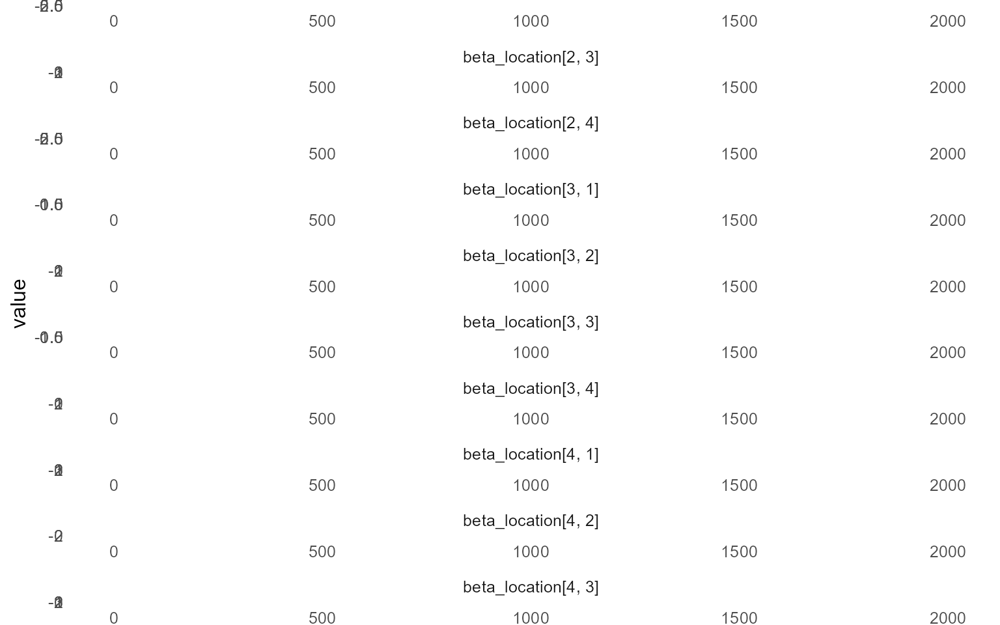
=== control ===
=== traceplot ===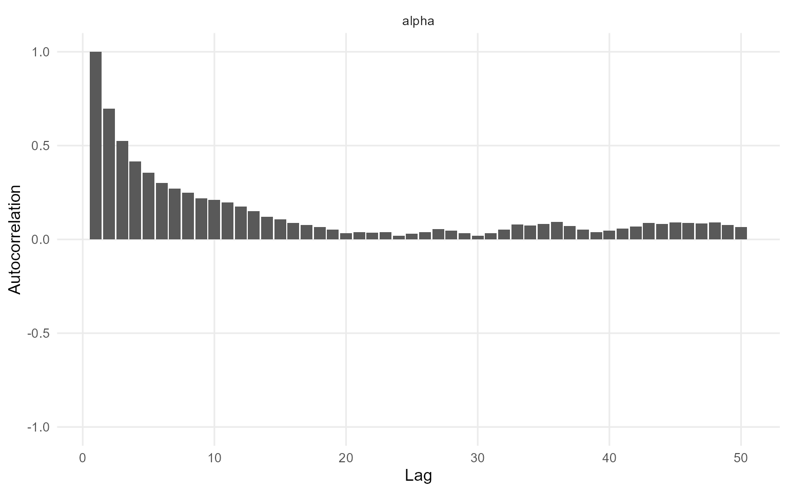
plot(fit_sb_crp, params = "scale", family = "caterpillar")
=== treated ===
=== caterpillar ===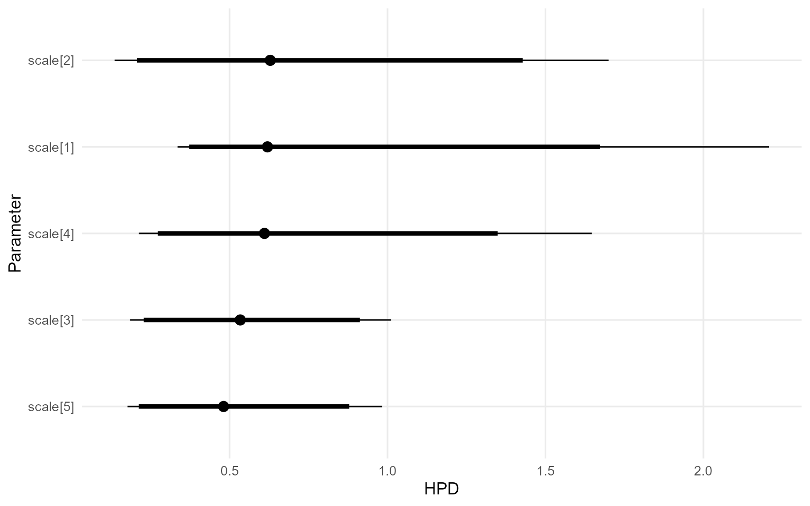
=== control ===
=== caterpillar ===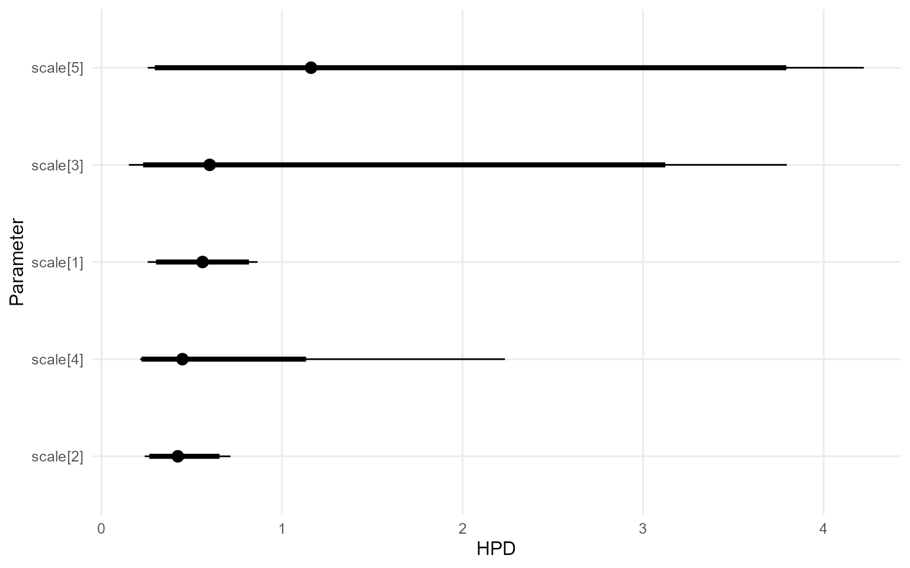
pred_mean_sb_crp <- predict(fit_sb_crp, x = x_eval, type = "mean",
interval = "credible", nsim_mean = 100)
plot(pred_mean_sb_crp)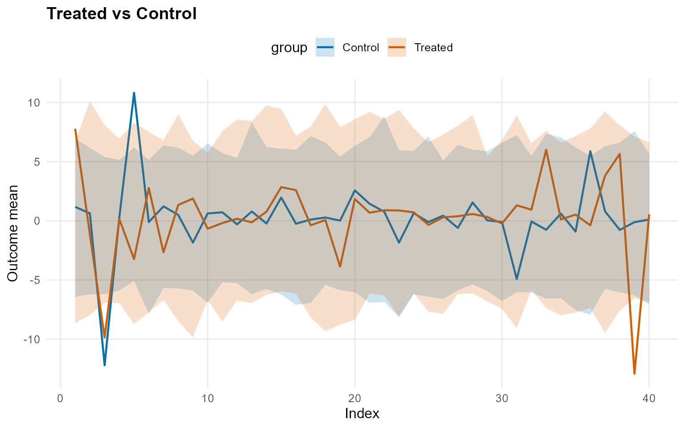
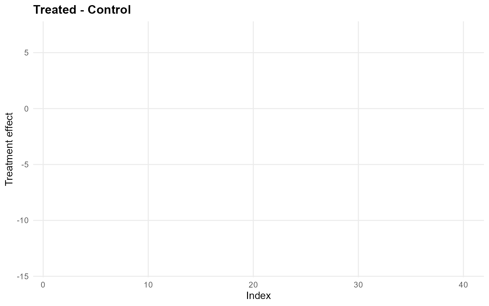
pred_q_sb_crp <- predict(fit_sb_crp, x = x_eval, type = "quantile",
p = 0.5, interval = "credible")
plot(pred_q_sb_crp)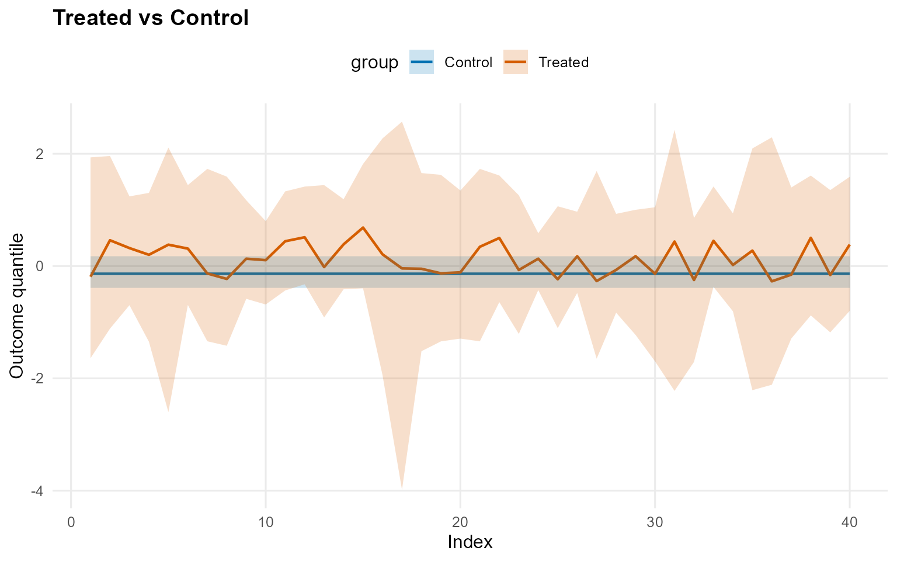
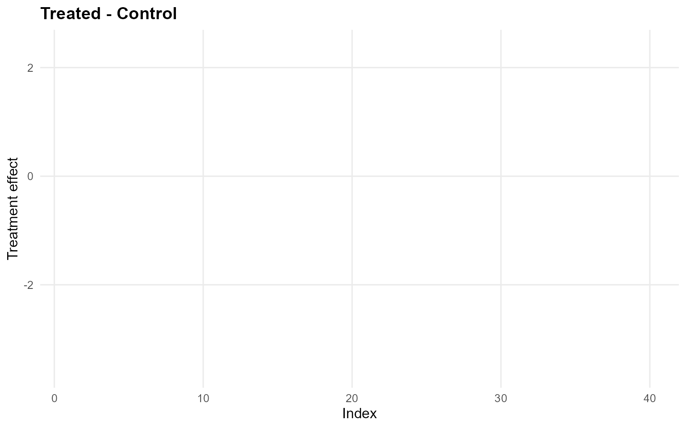
pred_d_sb_crp <- predict(fit_sb_crp, x = x_eval, y = y_eval,
type = "density", interval = "credible")
plot(pred_d_sb_crp)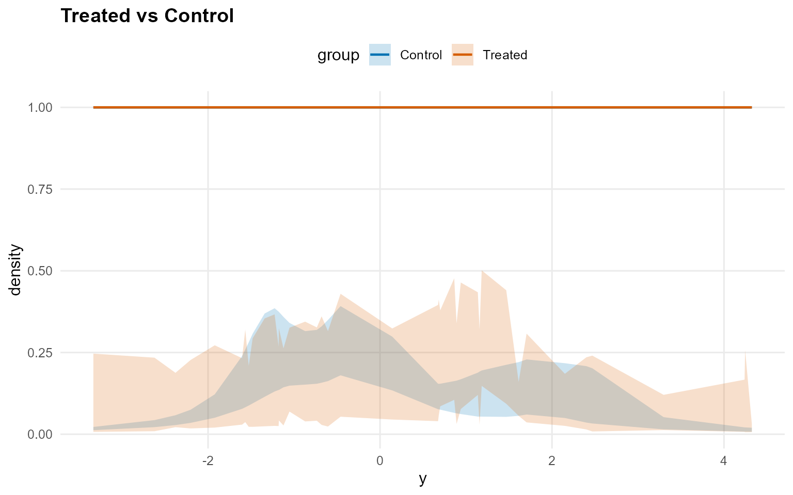
pred_surv_sb_crp <- predict(fit_sb_crp, x = x_eval, y = y_eval,
type = "survival", interval = "credible")
plot(pred_surv_sb_crp)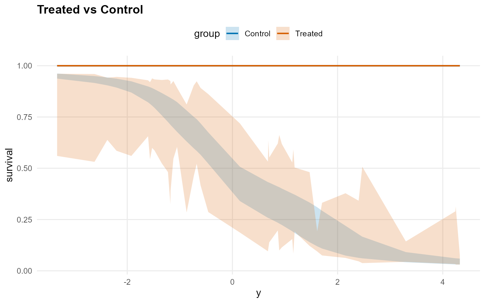
ate_sb_crp <- ate(fit_sb_crp, newdata = x_eval,
interval = "credible", nsim_mean = 100)
print(ate_sb_crp)ATE (Average Treatment Effect)
Prediction points: 40
Conditional (covariates): YES
Propensity score used: NO
Posterior mean draws: 100
Credible interval: credible (95%)
ATE estimates (treated - control):
id estimate lower upper
1 -1.21 -13.81 11.837
2 1.54 -13.971 13.643
3 -24.599 -12.3 16.204
4 1.358 -13.718 17.049
5 0.04 -13.646 14.767
6 -2.54 -14.096 15.756
... (34 more rows)
summary(ate_sb_crp)ATE Summary
==================================================
Prediction points: 40
Conditional: YES | PS used: NO
Posterior mean draws: 100
Interval: credible (95%)
Model specification:
Backend (trt/con): sb / crp
Kernel (trt/con): cauchy / cauchy
GPD tail (trt/con): NO / NO
ATE statistics:
Mean: 2.138 | Median: 0.165
Range: [-24.599, 136.289]
SD: 22.795
Credible interval width:
Mean: 28.959 | Median: 28.458
Range: [22.307, 36.637]
ate_plots_sb_crp <- plot(ate_sb_crp)
ate_plots_sb_crp$treatment_effect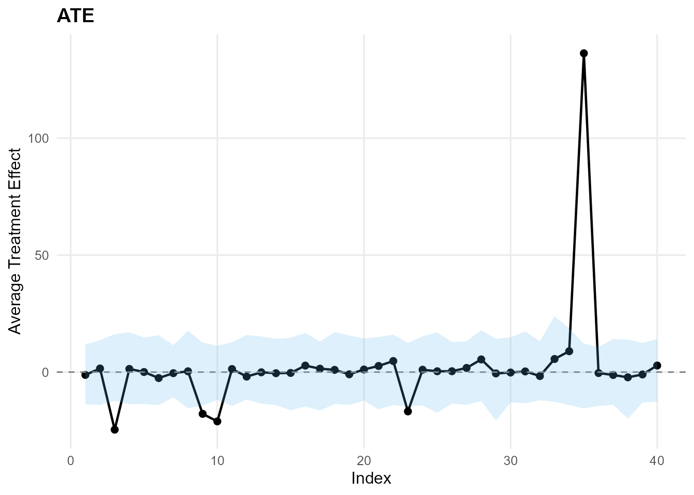
qte_sb_crp <- qte(fit_sb_crp, probs = c(0.25, 0.5, 0.75),
newdata = x_eval, interval = "credible")
print(qte_sb_crp)QTE (Quantile Treatment Effect)
Prediction points: 40
Quantile grid: 0.25, 0.5, 0.75
Conditional (covariates): YES
Propensity score used: NO
Credible interval: credible (95%)
QTE estimates (treated - control):
index id estimate lower upper
0.25 1 -0.466 -2.604 1.003
0.25 2 -0.04 -2.678 1.856
0.25 3 0.436 -1.264 1.354
0.25 4 -0.15 -3.31 1.168
0.25 5 -1.409 -7.716 1.471
0.25 6 0.426 -1.851 1.639
... (114 more rows)
summary(qte_sb_crp)QTE Summary
==================================================
Prediction points: 40 | Quantiles: 3
Quantile grid: 0.25, 0.5, 0.75
Conditional: YES | PS used: NO
Interval: credible (95%)
Model specification:
Backend (trt/con): sb / crp
Kernel (trt/con): cauchy / cauchy
GPD tail (trt/con): NO / NO
QTE by quantile:
quantile mean_qte median_qte min_qte max_qte sd_qte
0.25 -0.121 -0.053 -1.865 0.549 0.535
0.5 0.263 0.268 -0.134 0.822 0.273
0.75 -0.084 -0.104 -0.636 1.102 0.405
Credible interval width:
Mean: 3.46 | Median: 3.171
Range: [1.217, 9.187]
qte_plots_sb_crp <- plot(qte_sb_crp)
qte_plots_sb_crp$treatment_effect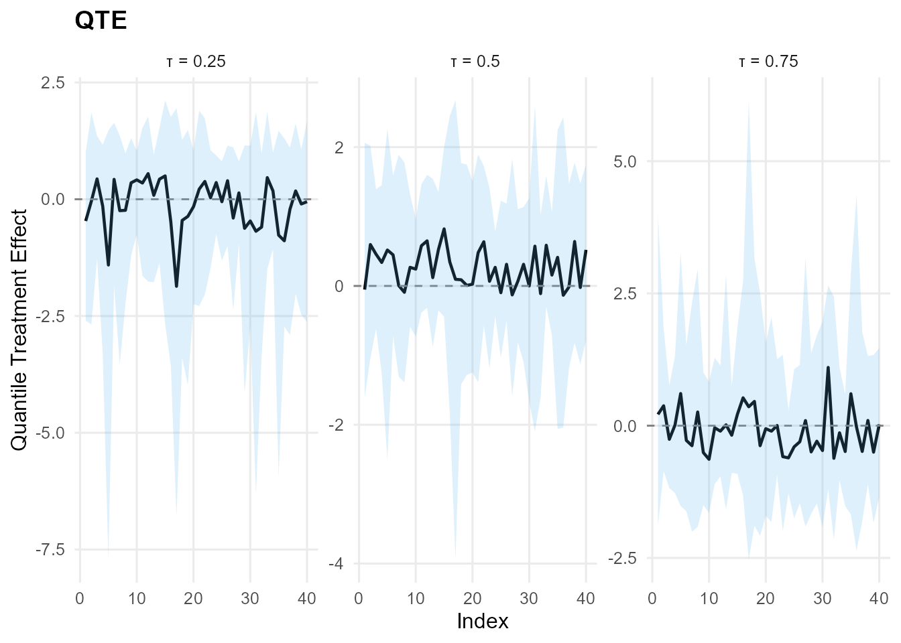
Model B: Treated CRP, Control SB (Cauchy)
bundle_crp_sb <- build_causal_bundle(
y = y,
T = T,
X = X,
kernel = c("cauchy", "cauchy"),
backend = c("crp", "sb"),
PS = "logit",
GPD = c(FALSE, FALSE),
components = c(5, 5),
mcmc_outcome = list(niter = 2500, nburnin = 500, nchains = 1, thin = 1, seed = 2),
mcmc_ps = list(niter = 2500, nburnin = 500, nchains = 1, thin = 1, seed = 2)
)
bundle_crp_sbDPmixGPD causal bundle
PS model: disabled
Outcome (treated): backend = crp | kernel = cauchy
Outcome (control): backend = sb | kernel = cauchy
GPD tail (treated/control): FALSE / FALSE
components (treated/control): 5 / 5
Outcome PS included: FALSE
epsilon (treated/control): 0.025 / 0.025
n (control) = 232 | n (treated) = 268
summary(bundle_crp_sb)DPmixGPD causal bundle summary
DPmixGPD causal bundle
PS model: disabled
Outcome (treated): backend = crp | kernel = cauchy
Outcome (control): backend = sb | kernel = cauchy
GPD tail (treated/control): FALSE / FALSE
components (treated/control): 5 / 5
Outcome PS included: FALSE
epsilon (treated/control): 0.025 / 0.025
n (control) = 232 | n (treated) = 268
fit_crp_sb <- run_mcmc_causal(bundle_crp_sb)===== Monitors =====
thin = 1: alpha, beta_location, scale, w, z
===== Samplers =====
RW sampler (30)
- alpha
- scale[] (5 elements)
- beta_location[] (20 elements)
- v[] (4 elements)
categorical sampler (232)
- z[] (232 elements)===== Monitors =====
thin = 1: alpha, location, scale, z
===== Samplers =====
CRP_concentration sampler (1)
- alpha
CRP_cluster_wrapper sampler (10)
- location[] (5 elements)
- scale[] (5 elements)
CRP sampler (1)
- z[1:268] [Warning] CRP_sampler: This MCMC is not for a proper model. The MCMC attempted to use more components than the number of cluster parameters. Please increase the number of cluster parameters.
summary(fit_crp_sb)
-- Outcome fits --
[control]
MixGPD fit | backend: Stick-Breaking Process | kernel: Cauchy Distribution | GPD tail: FALSE
n = 232 | components = 5 | epsilon = 0.025
MCMC: niter=2500, nburnin=500, thin=1, nchains=1
Fit
Use summary() for posterior summaries; plot() for diagnostics; predict() for predictions.
[treated]
MixGPD fit | backend: Chinese Restaurant Process | kernel: Cauchy Distribution | GPD tail: FALSE
n = 268 | components = 5 | epsilon = 0.025
MCMC: niter=2500, nburnin=500, thin=1, nchains=1
Fit
Use summary() for posterior summaries; plot() for diagnostics; predict() for predictions.
params(fit_crp_sb)Posterior mean parameters (causal)
[treated]
Posterior mean parameters
$alpha
[1] "0.415"
$w
[1] "0.531" "0.445"
$location
[1] "0.709" "-0.193"
$scale
[1] "0.634" "0.529"
[control]
Posterior mean parameters
$alpha
[1] "1.937"
$w
[1] "0.337" "0.251" "0.189"
$beta_location
x1 x2 x3 x4
comp1 "-0.103" "0.138" "-0.092" "-1.061"
comp2 "-0.112" "-0.208" "-0.245" "-0.172"
comp3 "-0.131" "-0.395" "-0.306" "1.569"
comp4 "-0.314" "-0.154" "-0.164" "0.958"
comp5 "-0.16" "-0.301" "0.072" "0.58"
$scale
[1] "0.628" "0.539" "0.491"
plot(fit_crp_sb, family = "traceplot")
=== treated ===
=== traceplot ===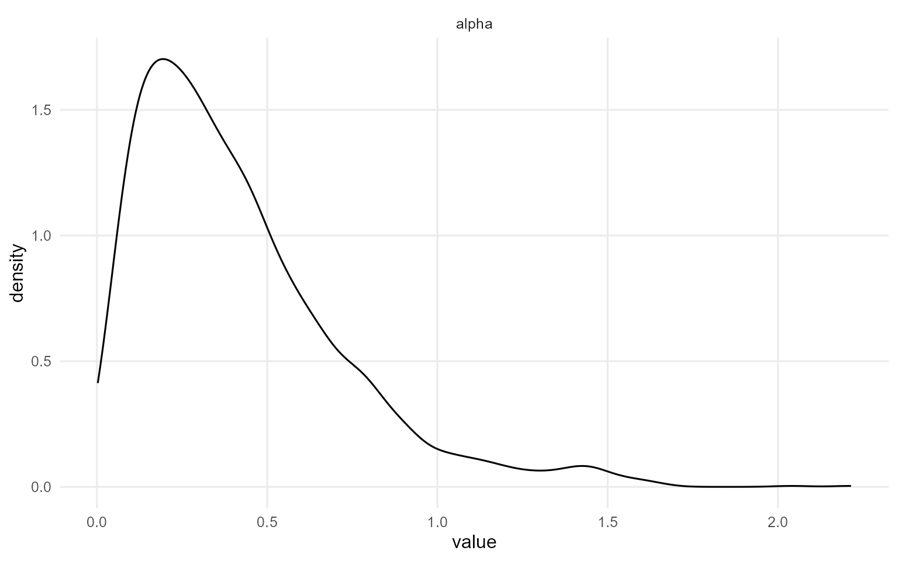
=== control ===
=== traceplot ===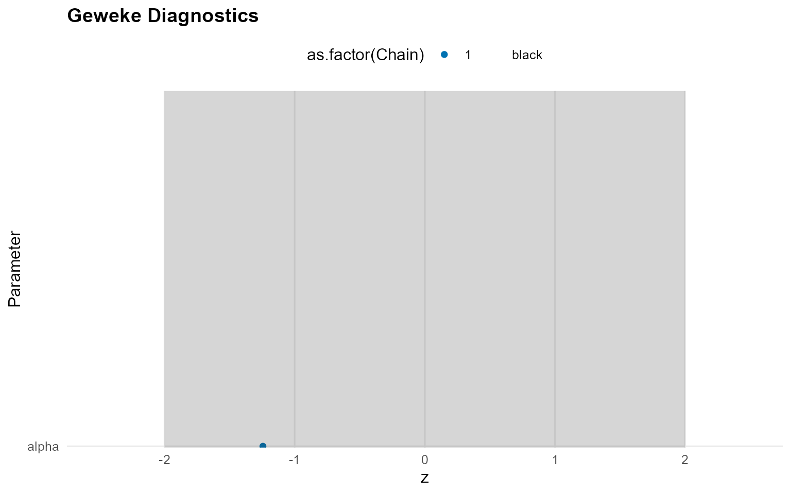
pred_mean_crp_sb <- predict(fit_crp_sb, x = x_eval, type = "mean",
interval = "credible", nsim_mean = 100)
plot(pred_mean_crp_sb)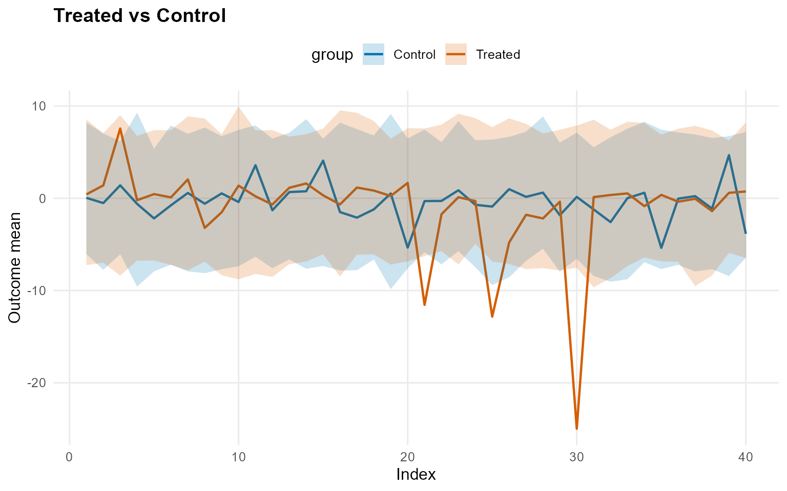
pred_q_crp_sb <- predict(fit_crp_sb, x = x_eval, type = "quantile",
p = 0.5, interval = "credible")
plot(pred_q_crp_sb)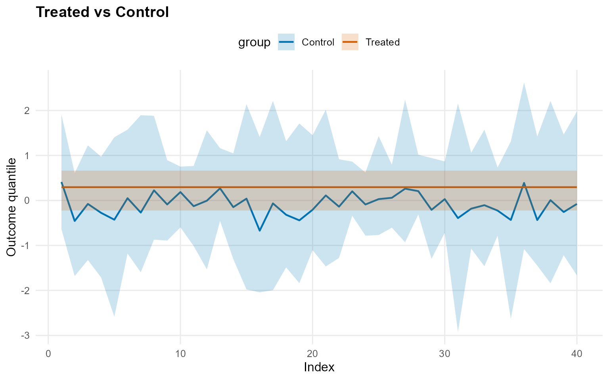
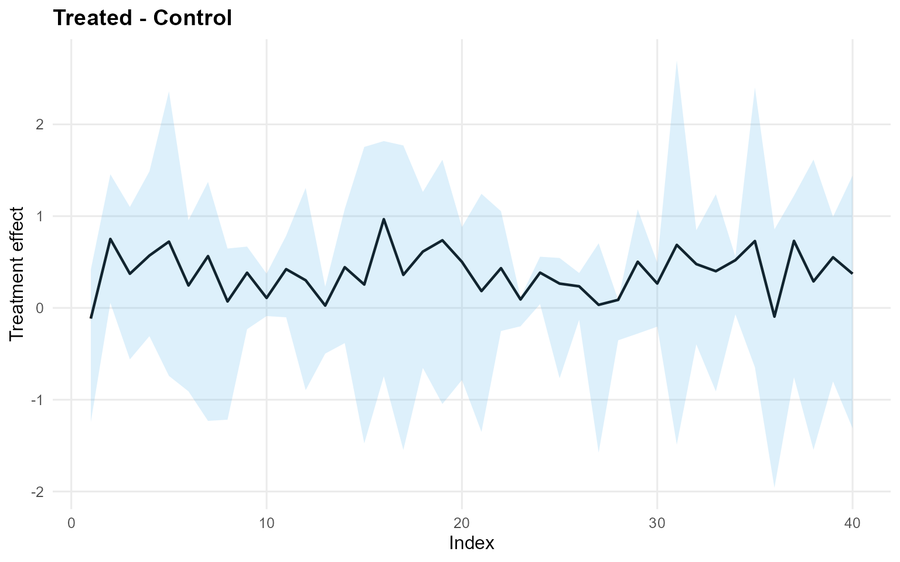
pred_d_crp_sb <- predict(fit_crp_sb, x = x_eval, y = y_eval,
type = "density", interval = "credible")
plot(pred_d_crp_sb)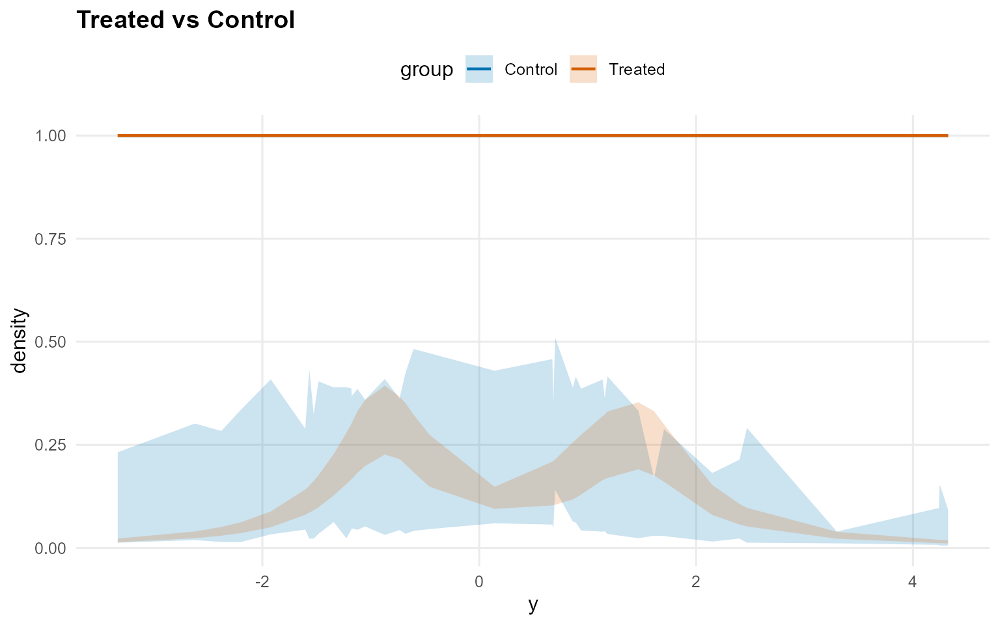
pred_surv_crp_sb <- predict(fit_crp_sb, x = x_eval, y = y_eval,
type = "survival", interval = "credible")
plot(pred_surv_crp_sb)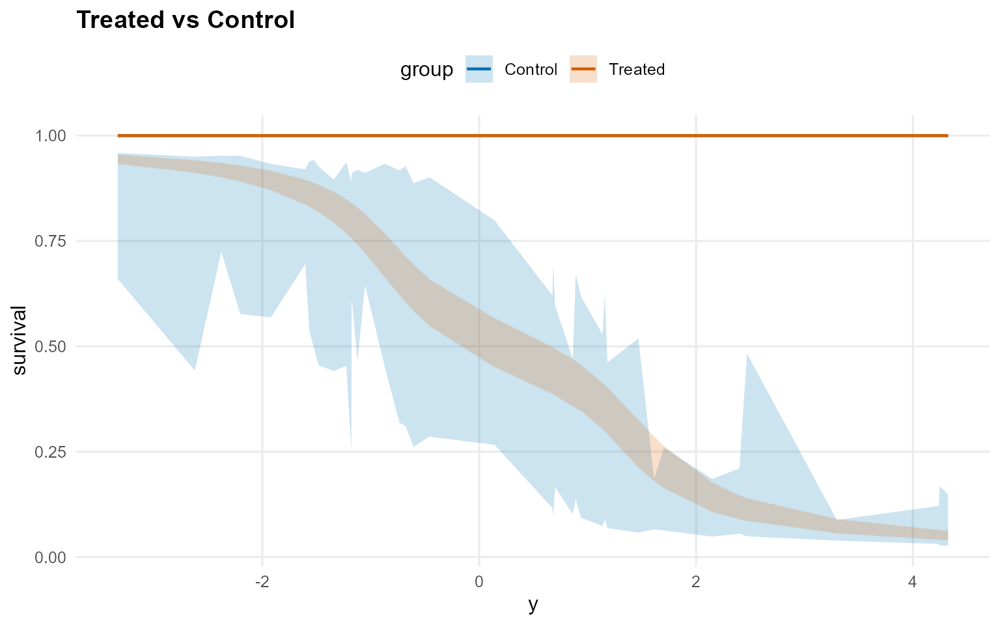
ate_crp_sb <- ate(fit_crp_sb, newdata = x_eval,
interval = "credible", nsim_mean = 100)
print(ate_crp_sb)ATE (Average Treatment Effect)
Prediction points: 40
Conditional (covariates): YES
Propensity score used: NO
Posterior mean draws: 100
Credible interval: credible (95%)
ATE estimates (treated - control):
id estimate lower upper
1 1.94 -13.504 15.804
2 0.953 -15.077 18.431
3 0.392 -12.06 16.755
4 14.966 -13.577 17.189
5 1.631 -12.74 14.193
6 -0.791 -11.782 13.14
... (34 more rows)
summary(ate_crp_sb)ATE Summary
==================================================
Prediction points: 40
Conditional: YES | PS used: NO
Posterior mean draws: 100
Interval: credible (95%)
Model specification:
Backend (trt/con): crp / sb
Kernel (trt/con): cauchy / cauchy
GPD tail (trt/con): NO / NO
ATE statistics:
Mean: -9.516 | Median: 0.592
Range: [-429.329, 20.809]
SD: 68.236
Credible interval width:
Mean: 28.25 | Median: 28.19
Range: [21.733, 33.711]
ate_plots_crp_sb <- plot(ate_crp_sb)
ate_plots_crp_sb$treatment_effect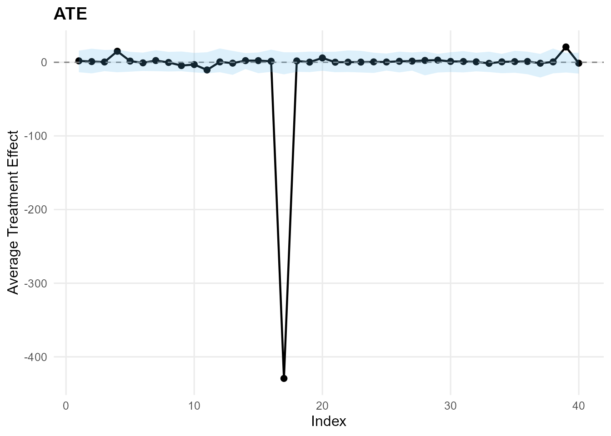
qte_crp_sb <- qte(fit_crp_sb, probs = c(0.25, 0.5, 0.75),
newdata = x_eval, interval = "credible")
print(qte_crp_sb)QTE (Quantile Treatment Effect)
Prediction points: 40
Quantile grid: 0.25, 0.5, 0.75
Conditional (covariates): YES
Propensity score used: NO
Credible interval: credible (95%)
QTE estimates (treated - control):
index id estimate lower upper
0.25 1 -0.076 -1.476 0.901
0.25 2 0.472 -0.592 3.011
0.25 3 0.107 -1.175 1.84
0.25 4 0.44 -0.619 2.79
0.25 5 1.135 -0.433 5.031
0.25 6 0.066 -1.457 1.183
... (114 more rows)
summary(qte_crp_sb)QTE Summary
==================================================
Prediction points: 40 | Quantiles: 3
Quantile grid: 0.25, 0.5, 0.75
Conditional: YES | PS used: NO
Interval: credible (95%)
Model specification:
Backend (trt/con): crp / sb
Kernel (trt/con): cauchy / cauchy
GPD tail (trt/con): NO / NO
QTE by quantile:
quantile mean_qte median_qte min_qte max_qte sd_qte
0.25 0.272 0.184 -0.408 1.368 0.412
0.5 0.386 0.384 -0.116 0.967 0.252
0.75 0.388 0.391 -0.733 0.93 0.346
Credible interval width:
Mean: 3.021 | Median: 2.886
Range: [1.171, 5.551]
qte_plots_crp_sb <- plot(qte_crp_sb)
qte_plots_crp_sb$treatment_effect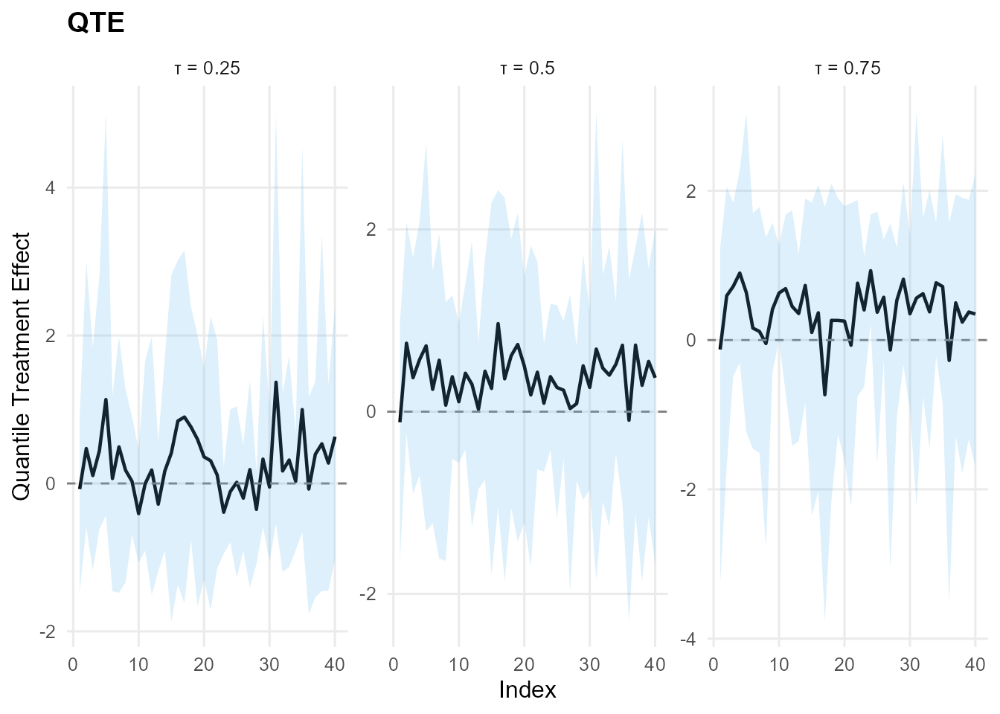